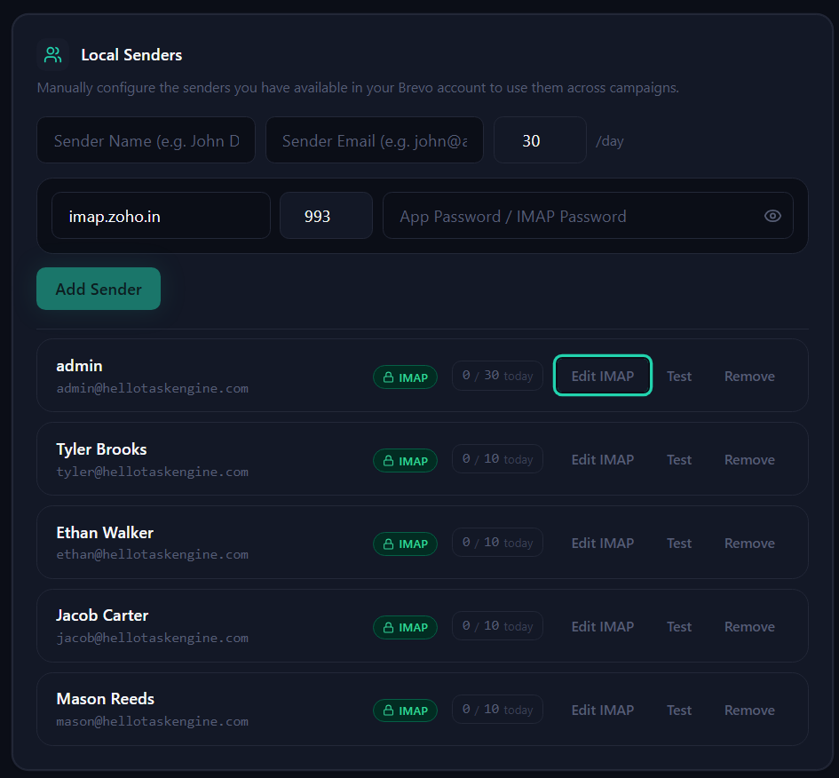
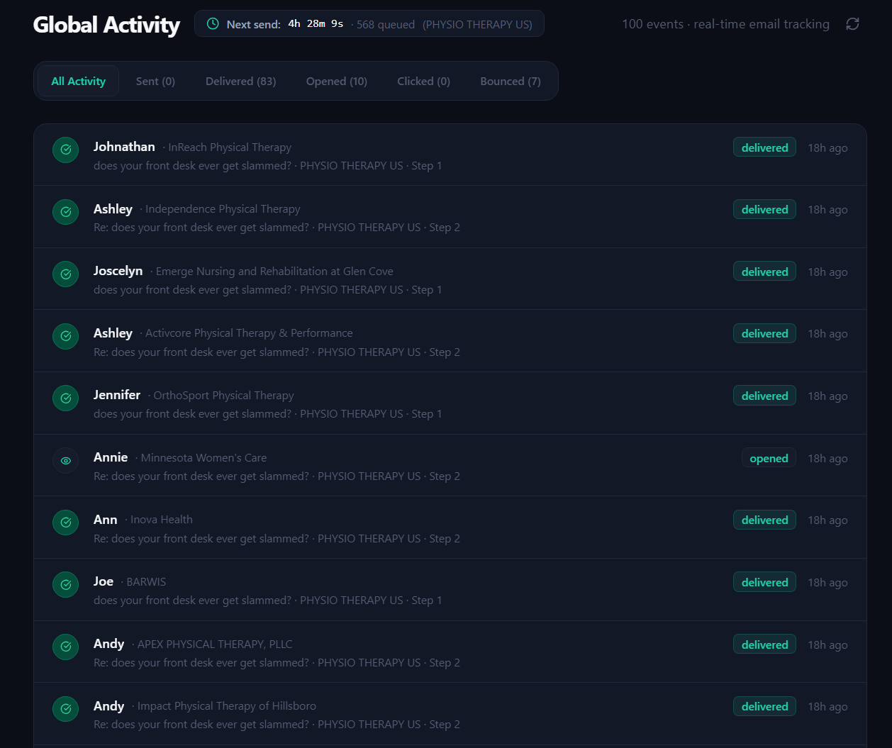
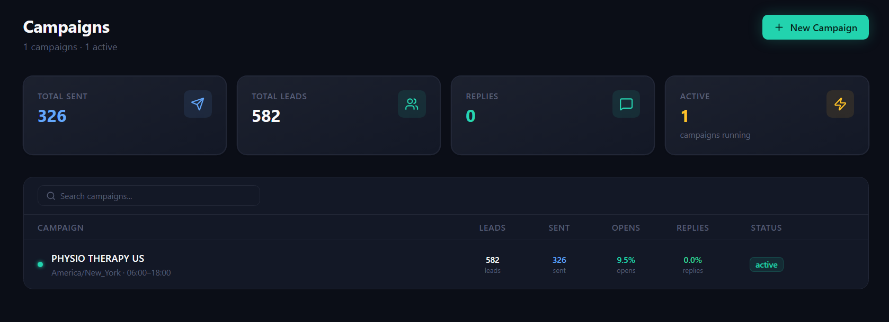

Project: Infrastructure
01 / 07
I built the infrastructure to send thousands of emails without getting flagged as spam.
Cold email infrastructure and outreach automation.
The Problem
02 / 07
A large lead list. One email sent at a time.
Outreach was manual and slow, and sending in bulk without proper infrastructure risked landing every email in spam.
The Insight
03 / 07
Volume isn't the hard part. Deliverability is.
Sending thousands of emails is trivial. Getting them into inboxes instead of spam folders is the actual engineering problem.
System
04 / 07

Domain strategy
SPF, DKIM, DMARC
Warm-up infrastructure
Bounce protection
Volume ramp-up
Multiple sending domains, authenticated and warmed, before a single campaign email went out.
The Personalization
05 / 07
Every email reads like it was written for one person.
First name, company, job title, and custom variables pulled straight from a CSV list — so campaigns never felt like a mail merge.

The Sequence
06 / 07
1
Open
2
Follow up
3
Follow up
4
Follow up
5
Break-up
"A five-email sequence, ending in a deliberate goodbye — not a fade-out."
Result
07 / 07

From one-by-one to thousands, without losing the inbox.
Manual outreach became a scalable system — sending high-volume personalized campaigns while keeping strong inbox placement.
Safe at scale
←
→